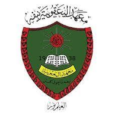

My first school was at Pasti Teratak Pulai, in my own village.
I went to school there when I was 4 years old.
Next I moved to a neat kindergarten which is also in my hometown.
I went to school there for two years, when I was 5 and 6 years old..

My primary school is at Sekolah Kebangsaan Jelawat 2. I was the first
batch to enter the school as the school had just opened. I finished school there in 2012.
During high school, I went to school at Maahad Yaaakubiah Nipah in Bachok.
I went to school here from form 1 to form 5. I finished school here in 2017.

I continued my studies at the stpm level at Sekolah Menengah Kebangsaan Agama
Falahiah Pasir Pekan. I went to school there in 2018 until 2019.
After graduating from Stpm, I got an offer to continue my studies at the degree
level at Uitm Merbok in the field of library management. Given the situation of covid 19 which has
not yet recovered, I am still continuing my online learning and have yet to set foot there.